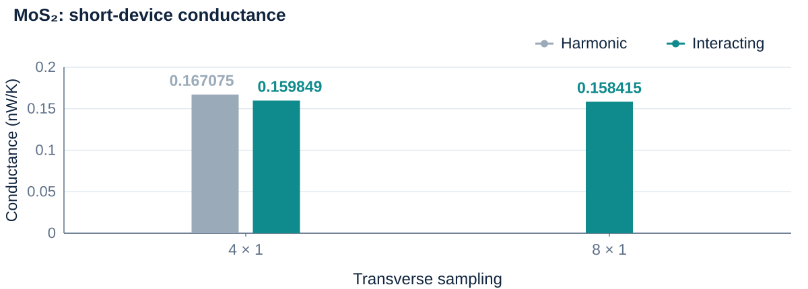
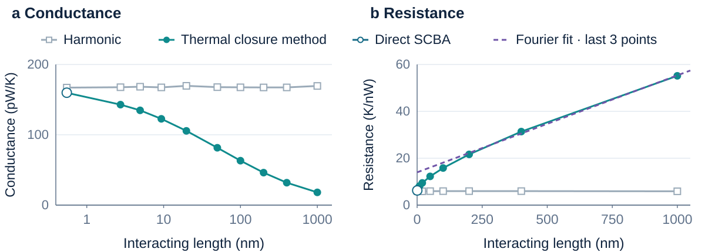
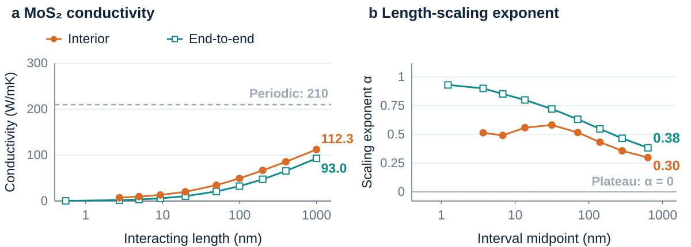
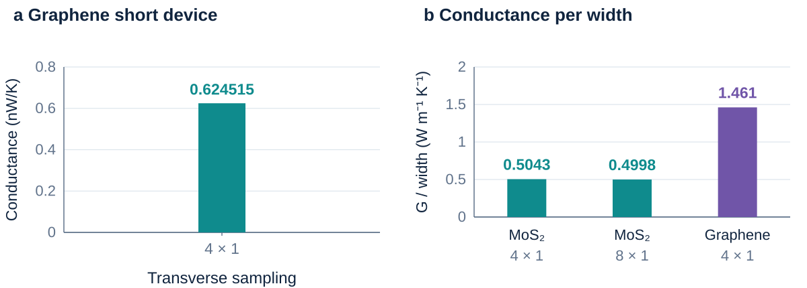
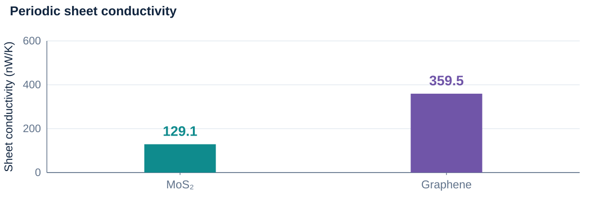
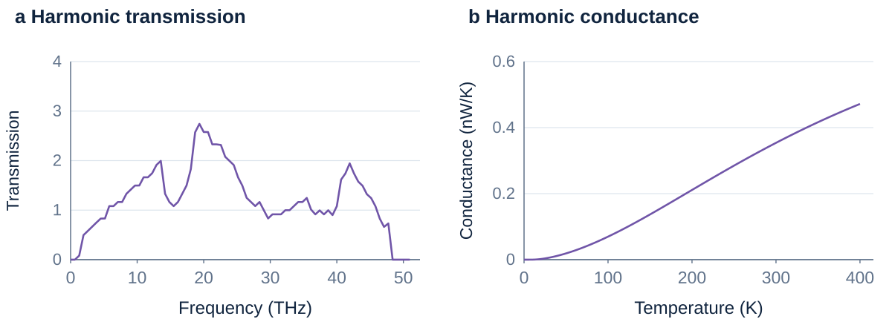

Deck 3 · Material calculations · 01
MoS₂: short-device conductance
The short device remains close to its harmonic reference.

The matched SCBA result is 4.3% below the harmonic value.
The short device remains close to its harmonic reference.

The matched SCBA result is 4.3% below the harmonic value.
A straight line fitted to the three longest lengths highlights the remaining curvature.

At 100 nm, resistance is 12.7% below the last-three-point fit.
Interior gradients exclude the reservoir temperature drops.

Interior conductivity still increases in the available results.
The available one-period devices can be compared using conductance per width.

Graphene: G ≈ 0.625 nW/K and G/W ≈ 1.46 W m⁻¹ K⁻¹.
The calculated sheet conductivity is about 2.78 times higher in graphene.

MoS₂: 129.1 nW/K; graphene: 359.5 nW/K.
MoS₂ has a length series; graphene has short-device and periodic results.
| Material | Available results |
|---|---|
| MoS₂ | Ten lengths up to 1 μm · matched harmonic results |
| Graphene | Qualified short-device SCBA · periodic conductivity |
| Diamond | Half-strength interaction qualified · full strength open |
February 2026 results use a separate harmonic model and cell.

The saved curves cover phonon transmission and conductance from 0 to 400 K.